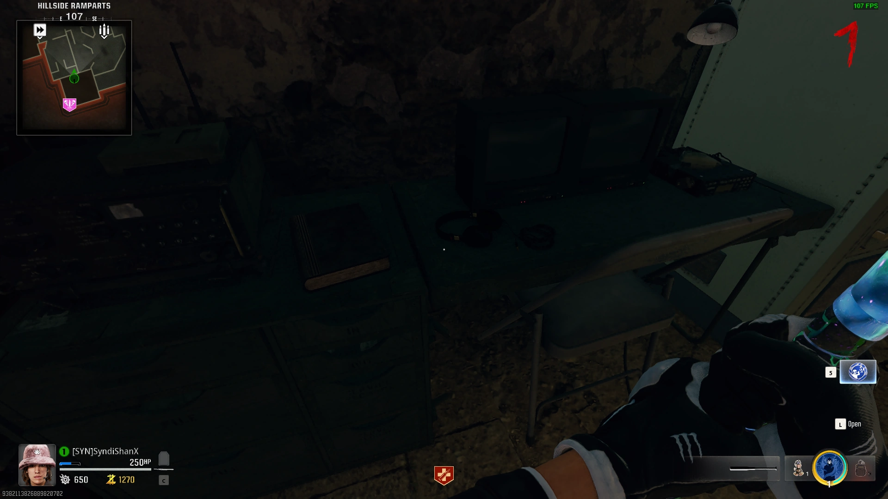
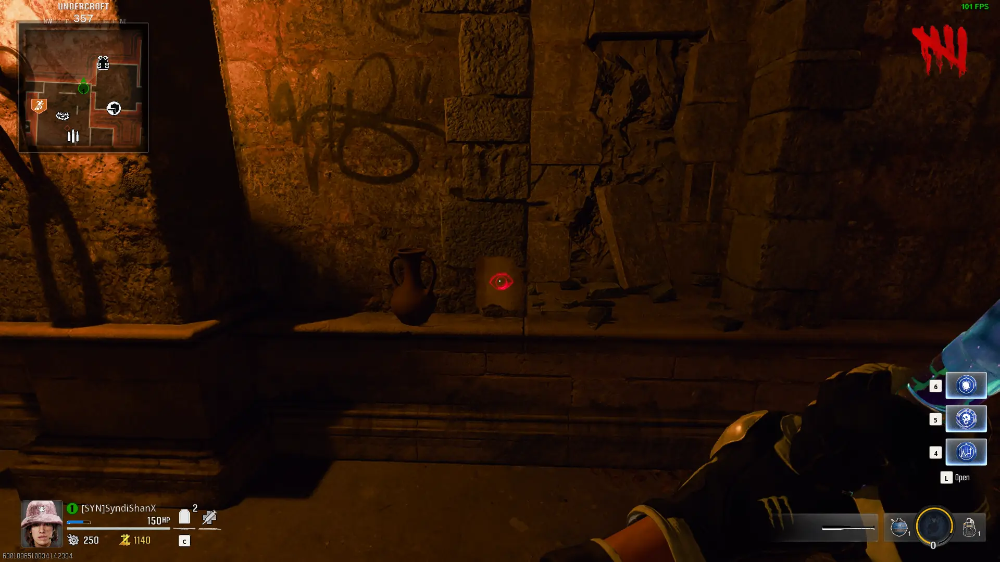
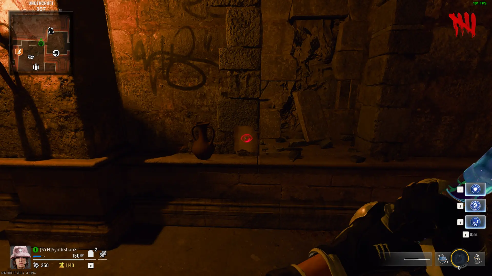
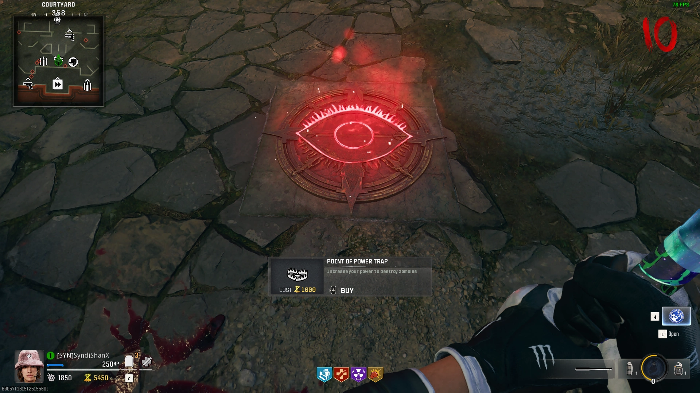

Easter Egg Songs
Interact with 3 Bunny Headphones:


Light all 3 Dragon Braziers with the Upgraded Dragon Sword:

Free Powerups
Shoot Powerup Items around the Map


After Shooting all of the Other Powerups a Fire Sale Powerup will Spawn
Bartender Easter Egg
Pick up 3 Bottles of Alchohol, then Interact with the Silver Tray in the Pub to Start the Minigame


Look at the Circle on the Bar in front of the Zombies and grab the same Colored Glasses and Place them in their Circle to get Points

Once you Serve Enough Zombies you will get PhD for Free
Maya Storyline Easter Egg
If you're playing as Maya, you can Interact with the Radio on the Table near Vulture Aid to go into a Secret Area and Find Franco
Guardian Easter Egg
Obtain a Knight Chess Piece from LOCATION, then Place it on the Chess Board in the Sitting Room
Kill Zombies until the Knight Enlarges, it will Follow you around and Smash Zombies around you

Bastard Swords
Progress to Round 10 or Higher, Kill a Knight, pick up the Stamp, then Interact with one of the 4 Statues in the Dining Hall to get one on the Swords

Dragon Sword Upgrade
Insert the Dragon Sword into the Statue in the Entrance Hall at the top of the Stairs
Go to the 3 Locations marked on the Map Above the Statue

Grab the Fire out of the Brazier and Take it back to the Statue as Fast as Possible as you Take Damage when Holding it
Once you Return all 3 Flames, the Dragon will Upgrade the Sword
Raven Sword Upgrade
Grab the Antiquity from the Alchemical Lab and Place it into the Puzzle in the Pub's Basement


Place the Raven Sword into the Bottom Slot of the Puzzle, Input the Code based on your Item

Lay Down next to the Portals on the Ground to make the Orbs go into them
Lead 3 Orbs into each Portal, then go back to the Puzzle and the Sword will go into a Portal and be Upgraded

Lion Sword Upgrade
Kill a Glowing Parsite with the Lion Sword, then Melee the Door with a Lion Knocker on it to Reveal a Glyph
Repeat this 4 Times, then Interact with the Door to enter a Secret Room
Place the Sword in the Pedestal, then Shoot the Glyphs in Order (The Sword Pedestal Shows the next Glyph)
If you Shoot all 4 Glyphs in the Correct Order in Time, the Sword will be Upgraded

Stag Sword Upgrade
Pick up a Lightning Rod Dropped by a Zombie near Quick Revive
Pick up a Lightning Rod next to Deadshot Daiquiri
Get Dead Wire on a Gun, then Shoot the Electric Panel under the Antenna in the Upper Village to Knock the Lightning Rod Down, then Pick it Up


Place all 3 Lightning Rods in the Urn on the Castle Wall, then Insert the Stag Sword into the Top of the Urn

Melee the Urn when your Sword has Electricity on it 3 Times
Fire Incantation
Grab Dragon Sword and Melee the Cannon 3 Times
Kill a Doppleghast with the Dragon Sword, then Pick up the ITEM
Place the ITEM in the COLOR Circle in front of the Castle
Kill the Zombies that Spawn to Reveal a Glowing Chest
>Melee the Chest with the Upgraded Dragon Sword to Reveal the Fire Incantation


Dark Incantation
Shoot the Raven in the Water Slide
Shoot the Raven out of the Sky in the Town Square, then Pick up the Raven's Talon

Place the Raven's Claw in the COLOR Circle in the LOCATION
Kill the Zombies that Spawn to Reveal a Glowing Chest
Melee the Chest with the Upgraded Raven Sword to Reveal the Dark Incantation


Light Incantation
Shoot the Mirror behind the Crystal in the Dining Hall above Vulture Aid
Shoot all of the Mirrors behind the Crystals to Redirect a Beam to Melt a Hole in the Bust, then Pick up the Paladin's Brouch


Place the Paladin's Brouch in the Yellow Circle in the Dining Hall in front of the Lion Painting
Kill the Zombies that Spawn to Reveal a Glowing Chest
Melee the Chest with the Upgraded Lion Sword to Reveal the Light Incantation


Electric Incantation
Deadshot Part, Shoot Otto's Horseshoe, then Shoot Yourself out of the Cannon
Charged Horseshoe is in the Storm Cloud to the Left or Right of the Town Square

Place Otto's Horseshoe in the COLOR Circle in the Town Square
Kill the Zombies that Spawn to Reveal a Glowing Chest
>Melee the Chest with the Upgraded Dragon Sword to Reveal the Fire Incantation

Main Quest
Unlock PaP
Talk to Krafft by opening the Hatch on the Door in the Dungeon
Interact with the Urns in the Pub with the Roman Numerals on them and note down their Symbols in Order
Pick up 4 Torn Pages in the Sitting Room


 

Obtain Melee Machiato and Punch the Wall in the Undercroft to Reveal a Puzzle
Shoot the Symbols in Order to Reveal the Book
0 0 0 0 0
0 0 0 0 0
0 0 0 0 0
0 0 0 0 0
Interact with the Book to Place the Pages and note the 4 Symbols in Order


Find the Trap with the Same Symbol as the one in the Book, Activate it and Kill Zombies until it goes away, Repeat this until you've done all 4 Symbols

The last one will always be in the Sitting Room, once you complete it a Red Orb will Spawn that you follow to A Wall in the Undercroft Staircase

Grab the Matching Incantation and Sword, use the Incantation then Weapon inspect in front of the Statue mathcing your Sword, it should Start Glowing Yellow, Repeat for all 4 Symbols
Pick up the Orb that Drops from the Sky
Fire Sword Trial
-Go to the Front of castle, Place down the Orb, then Interact to Start the Trial
-(Timed) Get Fire Kills
-Pick up the Orb
Lion Sword Trial
-Go to the Top Level of the Dining Hall, Place down the Orb, then Interact to Start the Trial
-(Timed) Green Orb Spawn around the map, stand in them, Souls Fly in
-Pick up the Orb
Raven Sword Trial
-Grab Raven Sword and Incantation, go to the Undercroft, Place down the Orb, then Interact to Start the Trial
-(Timed) Get Void Kills
-Pick up the Orb
Lightning Sword Trial
-Grab lightning Sword and Incantation, go to the Town Square, Place down the Orb, then Interact to Start the Trial
-(Timed) Get Electric Kills
-Pick up the Orb
**PREPARE FOR THE BOSS FIGHT**
Place the Orb into the Wall that has the 4 Animal Symbols to Start the Boss Fight
Kill the BOSS_NAME to Trigger the Cutscene